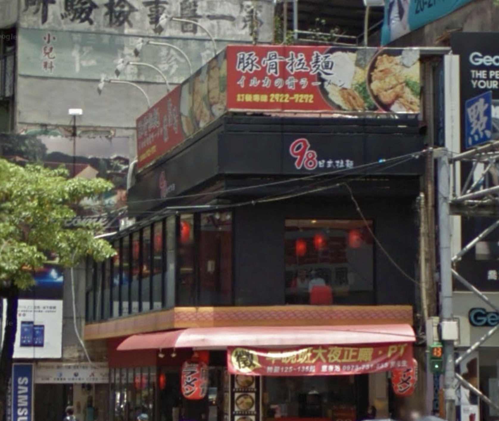
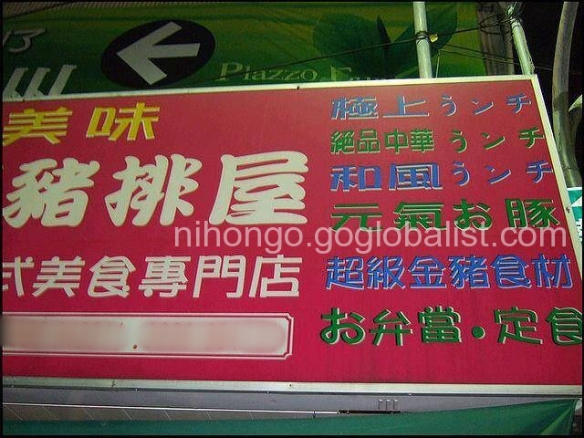
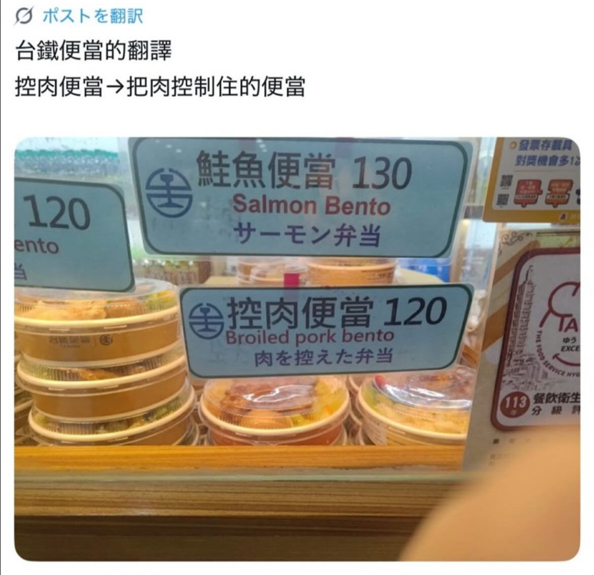
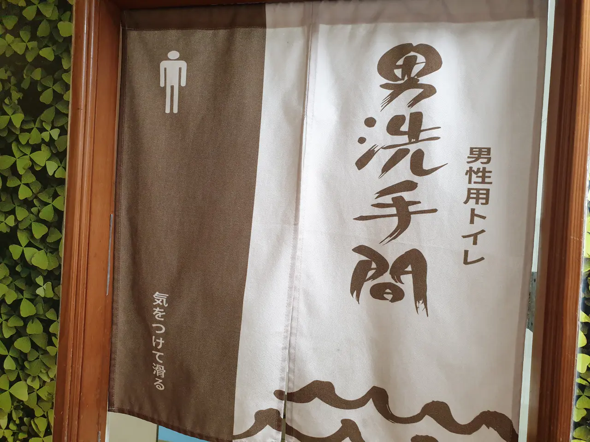
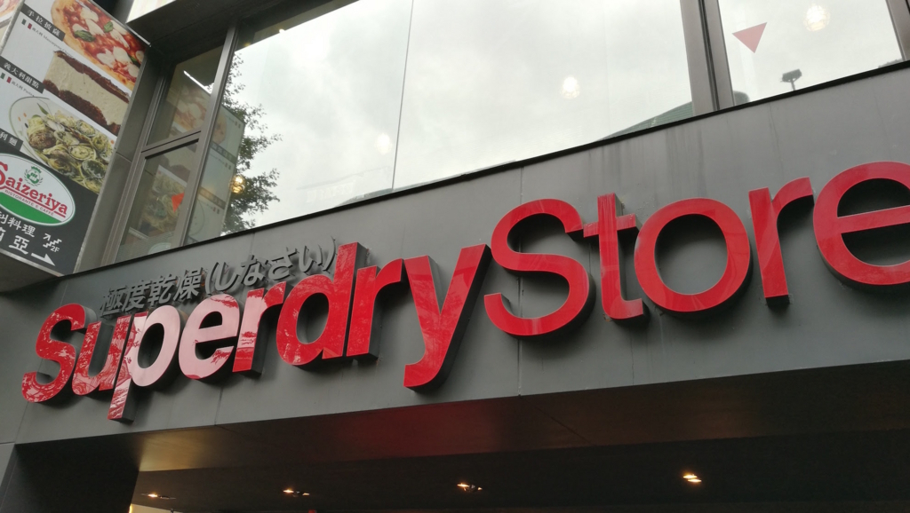
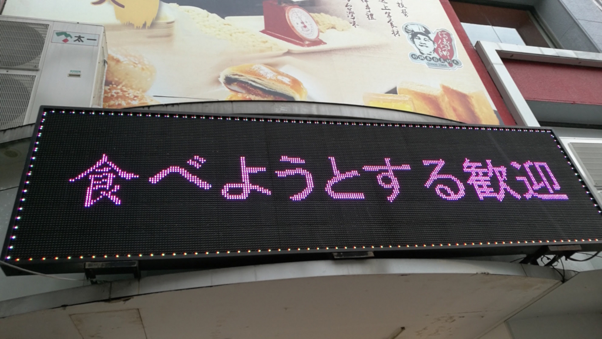
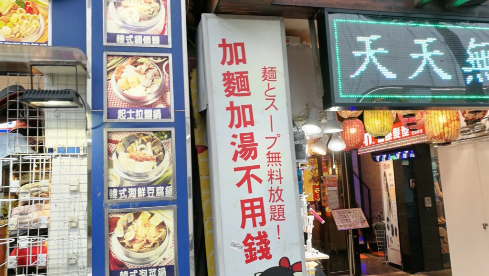
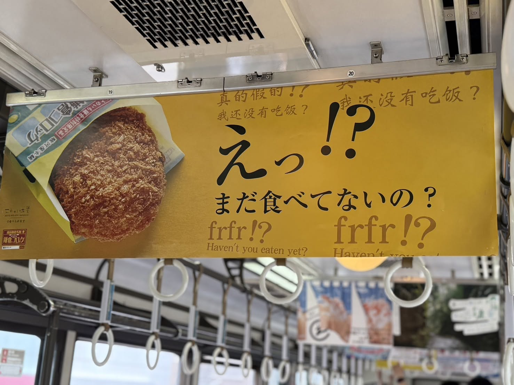

日本語の先生と話す用
まず写真だけ。次へで答え。
はじめに
どれが一番笑えますか？

どこが変でしょう？
まちがった単語
言いたかったのは、豚骨ラーメン。
イルカは海豚。骨のラーメンに見えます。
想寫豚骨拉麺，寫成海豚的骨頭。
出典：Bahamut sn=2802656

どこが変でしょう？
まちがった単語
言いたかったのは、ランチ（昼食）。
「ラ」がひらがなの「う」になって、うんち（大便）と読めます。
同じ看板に、元氣お豚、お弁當・定食。
午餐ランチ 被寫成うンチ（大便）。
写真：Joshua 提供。看板の透かし：nihongo.goglobalist.com

どこが変でしょう？
まちがった単語
台鉄の控肉便當。言いたかったのは、煮込んだ豚の弁当。
控肉の「控」を「控える」（量を減らす）と読んでしまいました。
隣の鮭魚便當は、サーモン弁当で合っています。
控肉被譯成「把肉控制住／少放肉」，其實是滷肉。
写真：Joshua 提供

どこが変でしょう？
まちがった単語
大きい字は中国語です。日本語なら、男性用トイレ。
右の「男性用トイレ」は合っています。
「気をつけて滑る」は、気をつけて、それから滑る、と読めます。言いたかったのは、滑るので気をつけて。
大字是中文男洗手間。気をつけて滑る像是叫人小心然後滑倒。
写真：Joshua 提供

どこが変でしょう？
意味がぶつかる
西門。イギリスのブランド、Superdry。
読むと、「すごく乾いている。しなさい」。
英國品牌，日文讀起來像「極度乾燥，去做」。

どこが変でしょう？
おしい日本語
西門。言いたかったのは、試吃歓迎。
想說歡迎試吃，寫成「歡迎你打算要吃」。

どこが変でしょう？
おしい日本語
かなり近い。でも、放題はふつう「食べ放題」。
很接近，但放題多半用在吃到飽。

どこが変でしょう？
逆方向
これは、日本側が中国語をまちがえた例。
「まだ食べてないの？」は、あなたはまだ食べていないの？
広告の中国語は「我还没有吃饭？」で、私がまだ食べていない、になっています。
日文是問你還沒吃嗎，中文寫成我還沒有吃飯。
写真：Joshua 提供
先生と話す